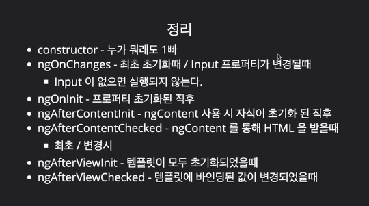

앵귤러로 작업을 하다 보면 클릭/키보드 같은 입력 이벤트가 발생할 때 템플릿 스타일이나 프로퍼티 값을 바꿀 때가 많다. 변화가 일어나는 타이밍이 있어야 작업을 할 수 있다는 생각이 들 정도인데, 입력 이벤트 외에 무엇이 또 변화를 일으킬까 궁금해졌다. 이 부분을 알면 코드 짜기가 수월해질 것 같았다.
변화를 일으키는 트리거(Trigger) 3가지
pascal precht가 말한(변화 감지 발표를 많이 하신 분이다) 변화 트리거는 3가지다. 트리거가 만드는 변화에 맞춰 뷰나 컴포넌트의 데이터를 어떻게 처리할 지 구상하면 될 것 같다.
- Events(이벤트) - click, submit…
- XHR(서버와의 통신) - Fetching data from a remote server(HTTP.get()…)
- Timers(타이머) - setTimeout(), setInterval()
그 외 앵귤러에 생명 주기와 관련된 메소드가 있는데, 이 메소드의 함수 바디 안에서 모델의 변경 사항을 뷰에 반영시키는 일을 할 수 있다.

참고) 이웅재 개발자님 강의 중 https://www.inflearn.com/course-status-2/
앵귤러의 변화 감지 방식 : ‘위에서 아래로’ 모두가 아는 변화

빨간색으로 칠해진 컴포넌트는 특정 컴포넌트에서 변화가 생겼다는 사실을 알고 있다. CD는 변화감지기의 준말.
앞서 말한 트리거로 인해 컴포넌트 변화가 일어난다. 그러면 변화가 일어났다는 사실을 컴포넌트 트리를 형성하고 있는 모든 컴포넌트가 알게 된다. 이 때 가장 먼저 소식을 접하는 컴포넌트는 최상위 루트 컴포넌트다. 루트 컴포넌트가 변화를 인식하면, 루트 컴포넌트는 자기 아래에 있는 모든 컴포넌트에게 소식을 전파한다.
다른 컴포넌트의 소식을 다 알고 싶은 게 아니라면? 감지기를 끈다

회색이 칠해진 컴포넌트는 (자기 내부의 변화를 빼곤) 다른 컴포넌트의 변화 소식을 받지 않는다.
이처럼 기본적으로 컴포넌트 전체가 변화를 감지한다. 하지만 외부 컴포넌트의 변화 하나하나를 감지하길 원치 않는 컴포넌트는 변화 감지기란 것을 꺼서 소식을 받지 않는다. 변화감지기는 런타임에 생성되는데 이걸로 템플릿에 바인딩 된 프로퍼티가 달라졌는지 감지한다. 변화 감지기를 끄고 싶으면 NgZone의 메소드 OnPush()를 사용하면 된다. 이 메소드를 사용하면 외부의 변화를 감지하지 못하고, 자신의 컴포넌트 내부에 있는 프로퍼티는 값이 바뀌지 않는 immutable이라고 선언하는 것과 같다.
1 | import { Component, Oninit, ChangeDetectionStrategy } from '@angular/core'; |
변화감지기의 구체적인 모습은?
런타임에 컴포넌트의 타입스크립트와 html를 합친 componentName.ngFactory.js 클래스가 만들어진다. 이 클래스의 메소드인
detectChangeInternal를 활용해 각 컴포넌트는 변화 감지를 수행한다고 하는데..ChangeDetectorRef디펜던시를 컨스트럭터에 주입하면 각 컴포넌트의 변화감지기를 참조할 수 있다.1
2(생략)
constructor (private cd : ChangeDetectorRef) {...}
변화 감지기를 선택적으로 껐다 켤 수도 있다. Input엘리먼트를 가지고 있는 컴포넌트는 외부 변화 감지를 하진 않아도 Input에서 나오는 value값을 다른 컴포넌트에 전달할 필요가 있다. Input value를 받는 컴포넌트의 경우도 마찬가지. 이런 경우에는 input value값이 달라지는 경우에만 변화감지기를 잠깐 열어둘 수도 있다. HTTP API로 옵저버블 타입의 Input value를 많이 주고 받는데 이 방법을 활용해 볼 필요가 있다고 생각했다.
1 | @Component() |
이처럼 변화감지를 조절할 수 있는 방법은 다양하다. 적절한 변화감지 통제가 일어나면 매 프레임마다 처리할 코드가 많은 브라우저의 입장에선 렌더링 시간이 줄어들기 때문에 보다 부드러운 웹 화면을 만들 수 있다.(추후 브라우저 렌더링 포스팅)
NgZone : 언제 끝날 지 모르는 비동기를 추적한다
동기 함수와 다르게 비동기 함수는 기본적으로 언제 작업이 끝날 지 알기 어렵다. 변화가 일어난 순간을 정확히 감지하고 거기에 대응해야 하는 앵귤러의 입장에선 이를 다루기가 쉽지 않다. 그래서 비동기 함수의 시작과 끝을 정확히 파악해주는 것이 zone.js다. zone.js가 있어서 비동기 함수를 코딩할 때마다, 앵귤러에게 일일이 함수의 변화 순간을 알려 주지 않아도 된다. 직접 변화 감지를 통제 하고 싶다면, NgZone이라는 모듈을 활용해서 관련 메소드를 쓰면 된다.
참고)
https://pascalprecht.github.io/slides/angular-2-change-detection-explained/#/16
pascal precht의 발표 슬라이드.
-
1번 ppt를 가지고 발표하는 pascal precht.
- https://blog.thoughtram.io/angular/2016/02/22/angular-2-change-detection-explained.html
또 pascal precht의(…) 사이트.
변화 감지와 관련된 앵귤러 객체/메소드는 다음 포스팅에 올릴 예정